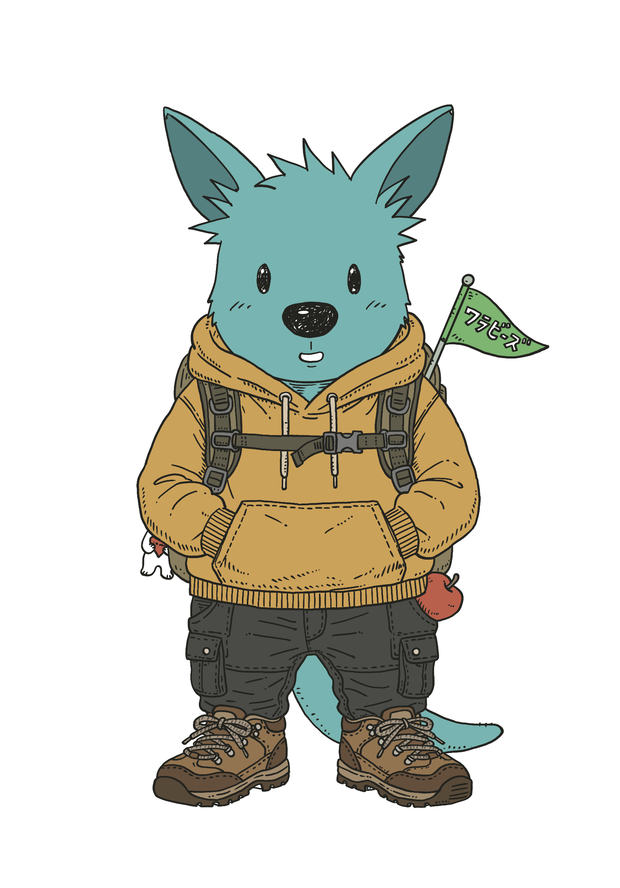
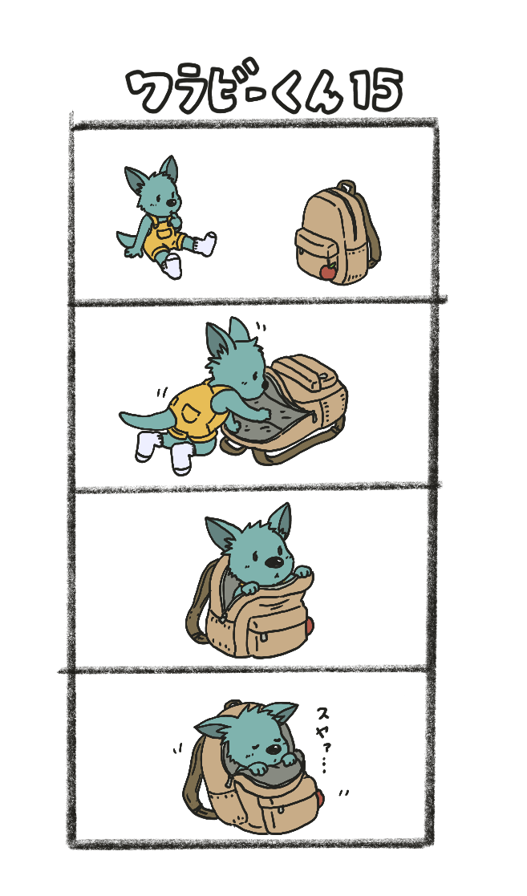

🔄 変わること
オープンイベントになります
これまではTOPO利用会員のみ参加でしたが、9月からは会員登録なしでどなたでも参加いただけます。新しい仲間も大歓迎！
ワ！の配布方法が変わります
今後はLINEやメールでの配信が中心になります。
（※移行期間中や希望される方には郵送も検討しています）
（※移行期間中や希望される方には郵送も検討しています）
✅ 変わらないこと
活動内容はこれまで通り
ウォーキング、スタンプカード、おやつタイム — 変わりません。
参加費もそのまま
参加者 1,500円（おやつ込み）／ 保護者 500円
申し込み方法も同じ
ニシヨリのLINEまたはメールでお申し込みください。
📅 今後の予定
5月
→ TOPOでの最後の開催（5/23 須磨離宮公園）
6〜8月
→ 夏休み＆準備期間
9月
→ リニューアル再開！ 🎉
※ 9月号のワ！は8月に配布します。届いたらぜひチェックしてくださいね！

📮 参加申し込み・お問い合わせ
📱 ニシヨリ LINE（QRコードから友だち追加）
✉️ tomonisiyo@gmail.com